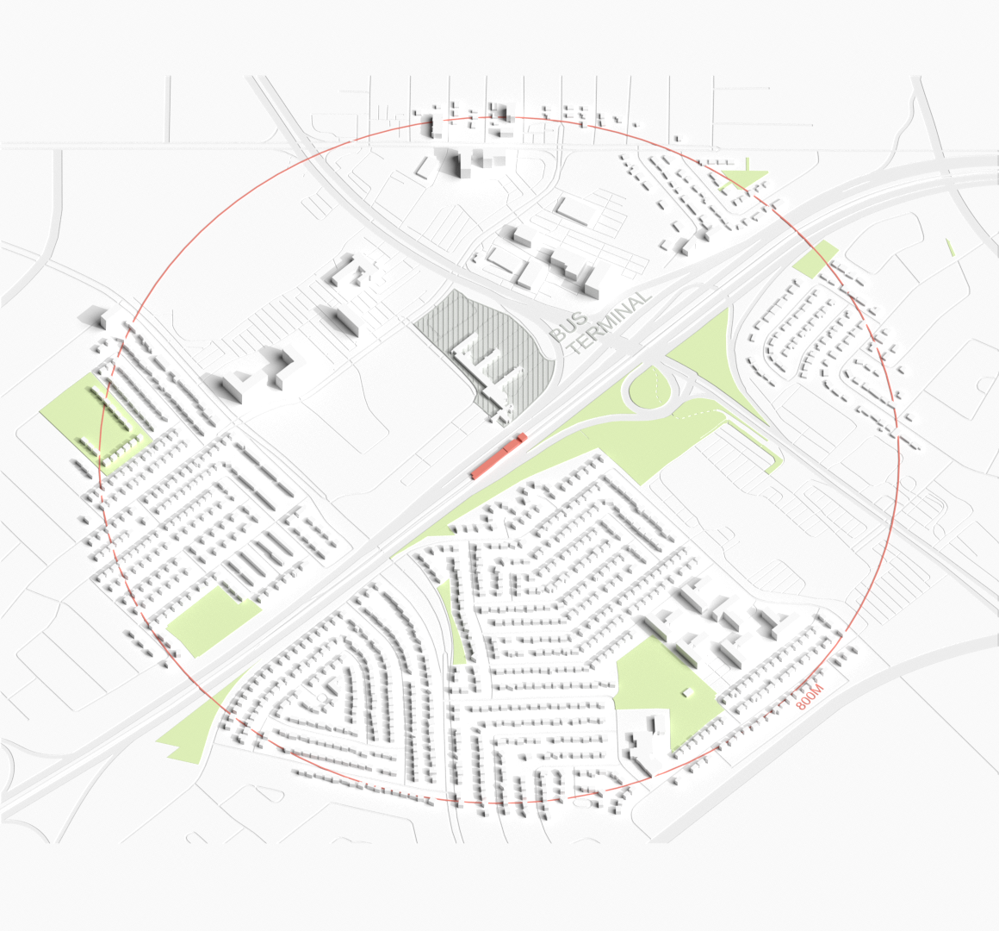
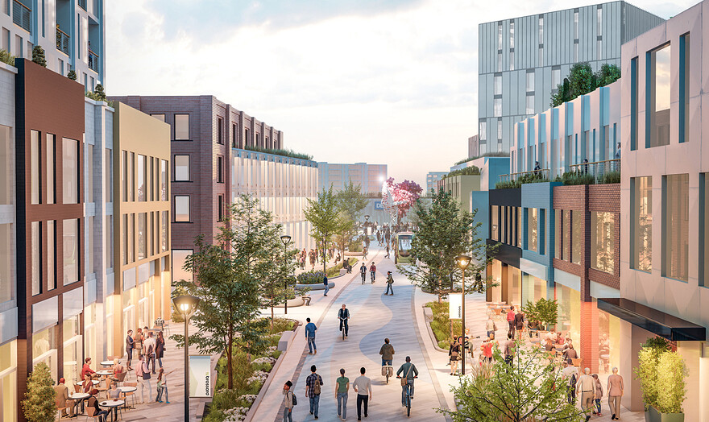
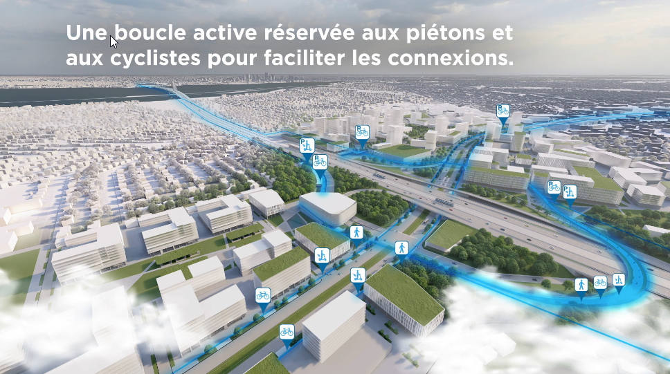
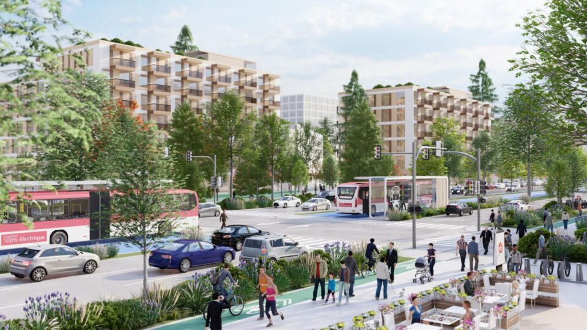
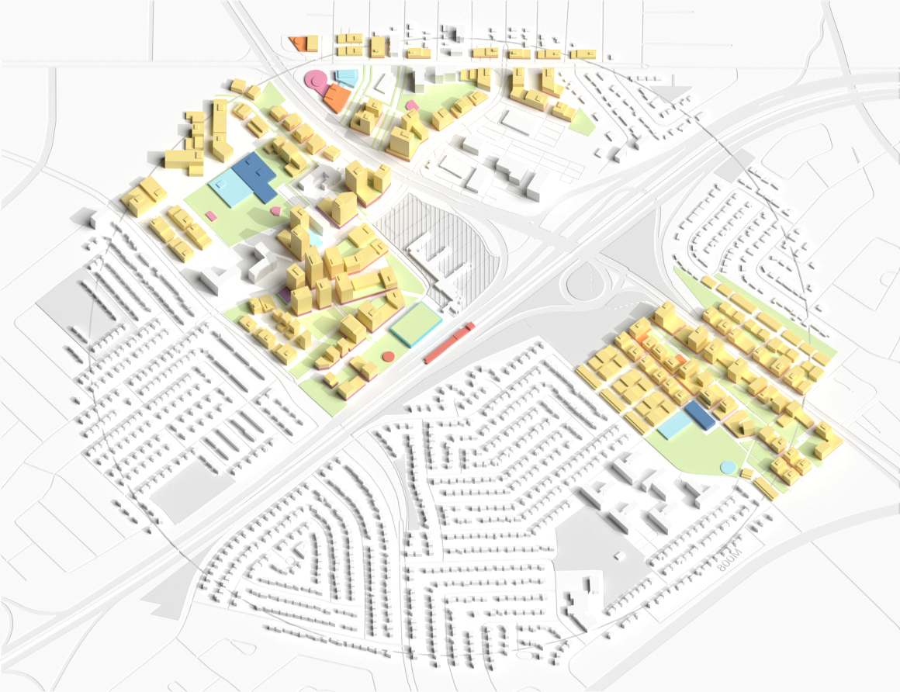
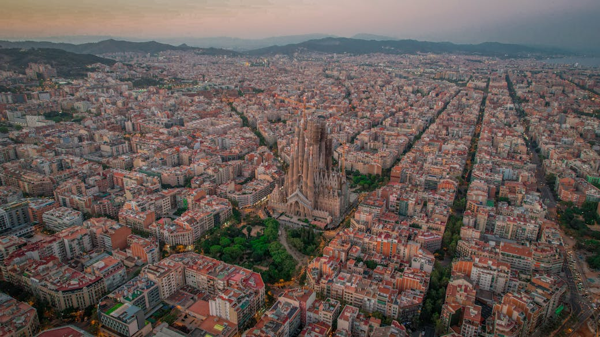
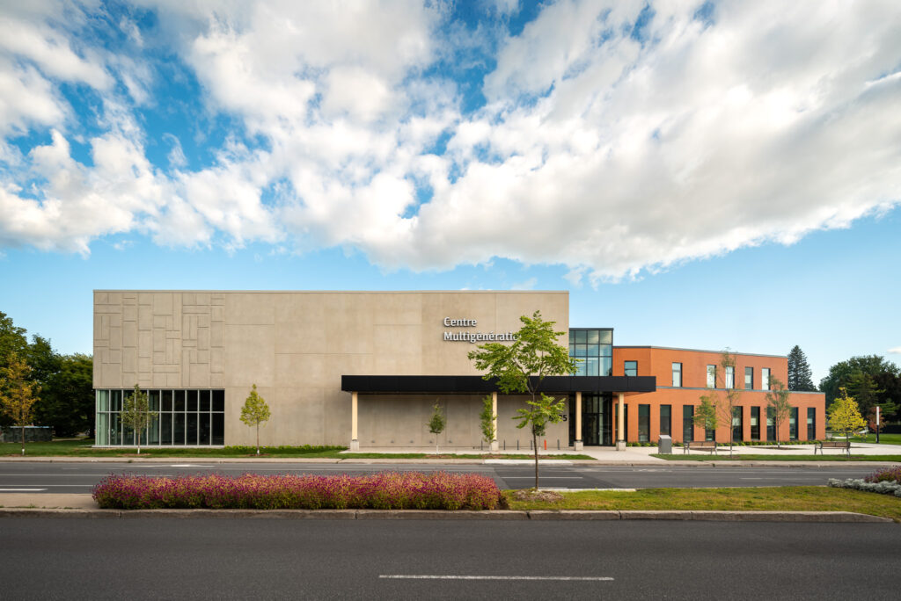

This page is under development :) Please do not share without permission
CASE STUDY
PANAMA STATION
BROSSARD, QC
How can strategic development, civic infrastructure investment, and inclusive planning transform a suburban terminal into a vibrant transit-oriented community?

PANAMA STATION
Animation Frame 1: alt
Description: The recently opened Panama Station, in the City of Brossard, is poised to be a catalyst for development in Greater Montreal.
Animation Frame 2: alt
Description: It is at the centre of a master-planned transit-oriented development (TOD), unique in Canada, which calls for mid-rise density, abundant green space, and a focus on liveability in an area that is likely to experience strong market demand for residential growth in the coming decades.
Animation Frame 3: alt
Description: But experience in other North American TODs shows that it is very difficult to densify suburban areas without significant attention to implementation.
This case explores how to bring Brossard’s complete community vision to fruition while ensuring it stays affordable and inclusive.
This is one of five case studies produced by the School of Cities to identify different kinds of transit-oriented development across Canada and to explore the opportunities and trade-offs involved in creating thriving communities near transit. In each case, we examine current patterns of growth and project what that community might look like in 20-30 years if development continues in this way (the “current trajectory”). We then present an alternative, “optimized” scenario that imagines policy and design changes that could address common challenges. All station area renderings are conceptual and should not be interpreted as specific guidance for individual properties. Renderings were created by the Infrastructure Institute in 2025 and may not reflect more recent proposals.
Located on Montreal’s south shore, Brossard is a fast-growing suburban community of nearly 100,000 residents. Its Panama Station has long had a bus connection to Montreal, but the opening of the Réseau express métropolitain (REM) rail link in 2023 was transformative. In a region choked by congestion, the REM is a $7-billion investment in mobility, which presents an opportunity to accommodate growth where it makes the most sense: near frequent, rapid transit. Just 15 minutes from Montreal, Panama Station is at the centre of an ambitious plan advanced by the City to create a new downtown for Brossard, a landmark destination with abundant housing, green space, and amenities. [1]
Today, the lands immediately adjacent to Panama Station are parking lots and underused commercial sites, with an established, low-density residential community on the periphery. These are mainly single-detached homes and some low-rise apartments, with nearly 85% built before 1990. Nearly 40% of residents are renters, a much higher rate than in the rest of the city, and the median household income is modest at $64,000.
Two provincial highways – Autoroute 10 and Boulevard Taschereau – bisect the site, cutting the different parts of the area off from each other. A cluster of office towers and an aging shopping mall sit on the northern edge of the station area, separated by more space for parking. Over 70% of commuters drive.
Brossard is a landing point for new Canadians, and the station area’s 5,300 residents are diverse: nearly half are immigrants and 60% are visible minorities. Many families live in the area, as well as a significant population of seniors. While the area has some of the elements that make a complete community – schools, grocery stores, and health care – access is generally low, and the area will need significant investment in both physical and social infrastructure to keep pace with growth.
Data sources: Statistics Canada, Environics Analytics (2024).
The City’s vision to build a vibrant new downtown on this site is exciting, and if done right, could make a dynamic complete community here.
Panama’s current trajectory
After several years of planning and community consultation, the Brossard city council approved its Nouveaux Centre-Ville plan in 2024. [2] The site plan, or Projet particulier d’urbanisme (PPU), covers a 2.5-kilometre-long stretch linking the 715,000 square foot Champlain Mall at one end with City Hall and the main library at the other. Panama Station is in the middle of this band, and is the area slated to see the most intensive development. The plan envisages high-rises up to 35 storeys directly adjacent to the station, with stepped changes in surrounding bands, scaling down to lower-rise (3-8 storeys) on the periphery.

The City's vision for the station area redevelopment includes wide esplanades and signature public spaces.Ville de Brossard, 2025.
Among the core features of the plan are wide esplanades and public spaces that feature fountains and public art; pedestrian walkways connecting larger roads and making the large parcels more walkable; and designated space for sports and cultural amenities. A large central park takes inspiration from Clichy-Batignolles-Martin Luther King Park in Paris, and green space targets for individual sites scale up with greater intensity of development. A boucle active (active loop) will reunite the quadrants of the neighbourhood with cycling and pedestrian paths that weave over and under the highways. [3]

A proposed active loop of cycling and pedestrian paths will reconnect the neighbourhood.Ville de Brossard, 2025.
Boulevard Taschereau, a major South Shore route connecting Brossard with neighbouring Longueil, runs through the station area and is at the centre of this infrastructure redevelopment. A $500-million redevelopment plan envisions this corridor also developed with TOD principles, including a focus on mid-rise density and a BRT route that links Panama Station with the metro in Longueil. [4] To build out this infrastructure, the two cities will partner with the Province of Quebec and regional transit service.

BoulevardTascherau's ongoing residential and commercial revitalization will add density and priority bus lanes.Ville de Brossard, 2025.
Though the downtown plan’s approval was relatively recent, the City has been laying the groundwork for development for several years. Brossard is among only a handful of station areas along the REM that have put in place bylaw changes enabling TOD, including rezoning to allow multi-family housing, raising maximum building heights, and reducing parking minimums significantly. [5]
In late 2025, the City approved the first development in the area, a 30-storey residential development with office, co-working, and local retail spaces on the ground floor. [6] Nearly a third of the site is dedicated to public space, with 17% allocated as green space. [7]
Optimized scenario: Making the plan a reality
The plan for Panama Station and its surroundings is forward-thinking and visionary, embodying many best practices for TOD, and it has recently been recognized with an international award. [8] It also proposes lower overall density levels than many TODs in large urban areas, with the explicit intention of creating TOD on a “human scale,” and generally low- to mid-rise development outside of the areas immediately adjacent to the station. This was the outcome of extensive community consultation and a frank assessment of the capacity of the city’s infrastructure.

Yet these decisions will involve trade-offs. Some larger parcels will not achieve maximum density build out, which may discourage investment and slow the pace of development, and which also lowers potential tax revenues from new residences. [9] Development charges to pay for parks and public spaces and the standard REM taxes levied next to stations also add to the cost of construction in a slowing market. The risk is that development stalls, never achieves its full potential, or is hampered by delays from speculation. The optimized scenario explores how to encourage early investment to create a vibrant and inclusive community.
RECOMMENDATION 1:
Revisit what optimal density means for this site over time
The City’s plan recognizes the existing suburban nature and infrastructure capacity of the community and that most brossardois come to the area seeking low- to mid-rise density. The vision it presents respects these preferences while still offering a significant step up from the density levels of a typical North American city. The plan models a polycentric European model, similar to Paris and Barcelona, which is characterized by compact mid-rise blocks instead of dense centres that sprawl outward. [10] While there is no formula for optimal density, cities must balance proximity to retail and services with the need for a sufficient population to ensure these amenities remain economically viable. [11]

Compact mid-rise blocks, like these in Barcelona, provide sufficient density for vibrant local retail and services.Archie McNicol, 2023.
In terms of retail, the plan calls for significant space dedicated to local stores along shopping esplanades. Yet these may struggle to compete with Brossard’s existing retail environment, especially with the Champlain mall within the plan area, and Canada’s largest outdoor shopping centre, the 3-million-square-foot Quartier DIX30, located just four kilometres (one REM stop) away. The amount of space dedicated to retail may need to be reduced to avoid vacant spaces. [12] Zoning and floor plate sizes may need to be adjusted to accommodate anchor tenants, including retail, government, or institutional, which can encourage further development. [13]
RECOMMENDATION 2:
Invest in major infrastructure and civic spaces to spur early development
Another approach is to repurpose this retail frontage into “civic frontage” that includes more social infrastructure from the outset, with the City leading the way in filling these storefronts. A mix of clinics, libraries, and cultural venues could exist alongside shops and cafés, a finer mix of uses that supports the area’s diverse and multicultural community. As the plan reenvisions Panama Station as the new city centre of Brossard, locating civic amenities here even above current requirements could draw foot traffic to child care centres, health care clinics, and new Canadian support services for the region, driving transit ridership.
Infrastructure can be a precondition for development and can contribute to a virtuous cycle of growth where businesses and residents locate close to transit, parks, and amenities. Yet major projects that will benefit all residents should not fall mainly to the private sector. Several successful TODs have used special district zoning to kick-start this process with tax increment financing, which can also be used for planning work and subsidizing affordable housing. [14]

Brossard's Centre Multigénérationnel opened in 2025 and is accessible by a short bus ride from Panama Station.Ville de Brossard, 2025..
The City has laid the groundwork with investments in its three-year capital works plan, including funds in its 2026 budget for sewer expansion and an overhaul of social infrastructure such as community pools and a new multi-generational centre. The TOD plan suggests the City may also or expropriate land for public spaces if private landowners are demanding too high a price. As a complementary approach, the City could also explore land assemblage – combining adjacent parcels into larger sites – to facilitate coordinated development and increase feasibility for higher-density projects. Other municipal levers include offering higher tax credits to early developers, and instituting a tax on specific areas (for example, vacant lots or parking to disincentivize speculation on areas near TOD and help to speed up development). [15]
With a solid plan in place, backed by municipal zoning changes and early market interest, this is the time for other orders of government to step in with support. To avoid early projects stalling because of high development charges, the province and even federal government could step in with matching funding for major housing-enabling infrastructure. Regional, provincial, and federal programs can jump-start growth with investments in the public realm to make this an even more attractive place to invest.
RECOMMENDATION 3:
Prioritize affordability and inclusivity
The Panama neighbourhood is currently one of Brossard’s more affordable areas, but with a large percentage of renters and seniors on fixed incomes, it carries a high displacement risk. The residents most likely to benefit from better transit and new amenities, including lower-income households, seniors, and people who do not drive, are also the most likely to be priced out if protections aren’t built in from the start. The proposed amenities, public spaces, and easy transit access are likely to increase land values in the area – as is common with successful TOD – which could force existing community members to other less expensive areas. [16]
The City’s plan includes a sliding scale – recommending that affordable housing be spread throughout the development and up to 15% at the highest densities – but there is no minimum requirement at the municipal or regional level. [17] This risks early development of homes that are too expensive to serve the community, and (as is often the case with TOD) too small for families, especially if they replace existing naturally affordable rental properties, often the first housing stock to be lost during redevelopment.
A stronger approach is to lead with affordability. Prioritizing affordable, perhaps even social, housing construction would allow existing residents to stay in the area as development progresses, rather than being displaced to distant neighbourhoods with poor transit access. [18]
To prevent direct displacement among seniors, some cities have worked with communities to identify buildings that house large numbers of senior residents, and employed targeted financial support to help maintain. [19] It will also be critical to continue serving the senior population through civic amenities, retail, and other spaces that allow them to participate in the community as it evolves. Social infrastructure, which can include civic spaces such as community centres and libraries but also commercial spaces that encourage interaction. [20] Locating these along pedestrian-oriented thoroughfares can encourage higher use and engagement. Ensuring a mix of accommodations and retail – particularly grocery stores, cafés, and restaurants – at all price points can promote. [21]
Brossard is on the cusp of major change driven by transit access and a visionary new downtown plan. Bringing this to life will require strong, early investment to kick-start positive changes, and close monitoring to ensure development remains inclusive and does not stall. By layering civic and cultural uses and a focus on affordability into an already strong plan, Panama Station can evolve from a mobility hub into a complete neighbourhood.
Research and writing: Sarah Chan, Kathryn Exon Smith, Anika Reisha Taboy Architectural renderings: Daniel Lam, Phat Le Maps and data visualization: Isabeaux Graham, Jeff Allen Web development: Mieko Yao, Jeff Allen Additional contributors: An Pham, Carrie Zeng ~ March 2026
Aryana Soliz et al., “Getting into the Zone: What Can Municipal Bylaws Tell Us about Transit-Oriented Development in Montreal, Quebec?,” paper presented at 102nd Transportation Research Board Annual Meeting, 2023, URL; Ville de Brossard, “Plan particulier d’urbanisme du centre-ville,” p. 61
Alexandre Fleurent, Recension et analyse des stratégies et des instruments municipaux favorisant l’abordabilité en habitation : Rapport de projet en organisation (2024),URL
João F. Bigotte and António P. Antunes, “Social Infrastructure Planning: A Location Model and Solution Methods,” Computer-Aided Civil and Infrastructure Engineering 22 (2007): 570–83, DOI
Leah Brooks and Rachel Meltzer, “Retail on the Ground and on the Books: Vacancies and the (Mis)Match Between Retail Activity and Regulated Land Uses,” Journal of the American Planning Association 91, no. 2 (2025): 192–206, DOI
Julie Mah, “Broadening Equitable Planning: Understanding Indirect Displacement through Seniors’ Experiences in a Resurgent Downtown Detroit,” Environment and Planning A: Economy and Space 55, no. 4 (2023): 905–22, DOI
Helena Hollis et al., Social Infrastructure: International Comparative Review (Institute for Community Studies & Bennett Institute for Public Policy, 2023), URL